Ser Capoeira Inclusiva Adaptada
Projetos e eventos
Eventos e atividades do Ser Capoeira Inclusiva Adaptada.
(01) Evento principal
Tardezinha Inclusiva
Evento anual
Evento recreativo anual para crianças e adultos típicos e atípicos.
- Próxima edição
- Data a confirmar
- Como participar
- Informações pelo WhatsApp do Professor Dinho
- Parceiros
- Em breve
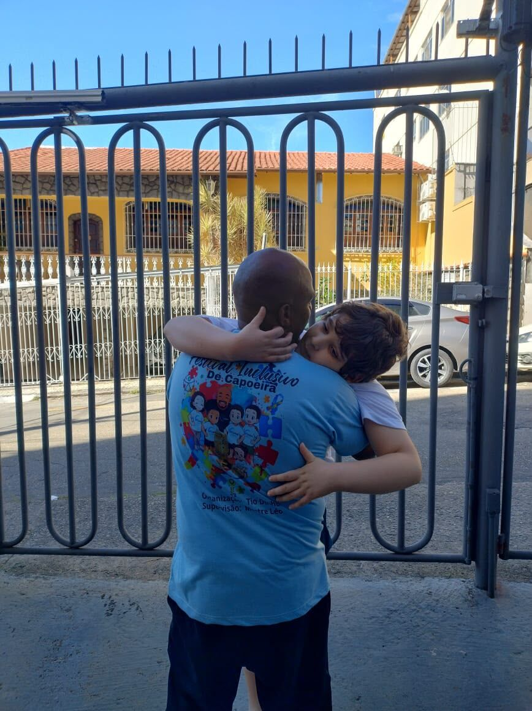
(02) Galeria
Momentos do Ser Capoeira
Registros de aulas, rodas e encontros. Selecione uma foto para ampliar; use as setas do teclado para navegar.
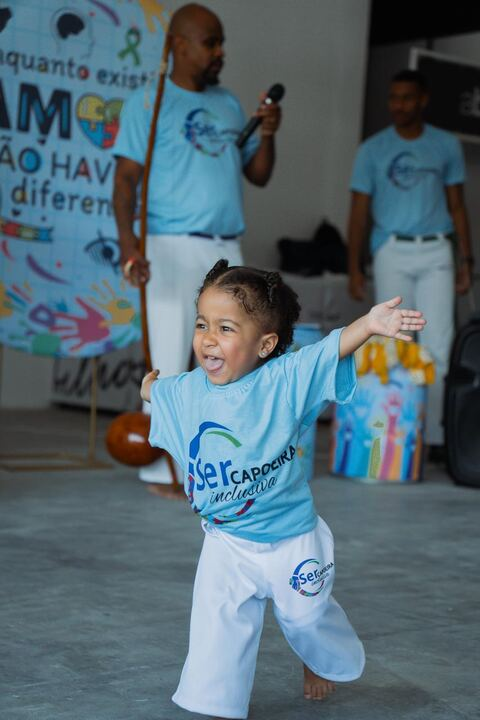
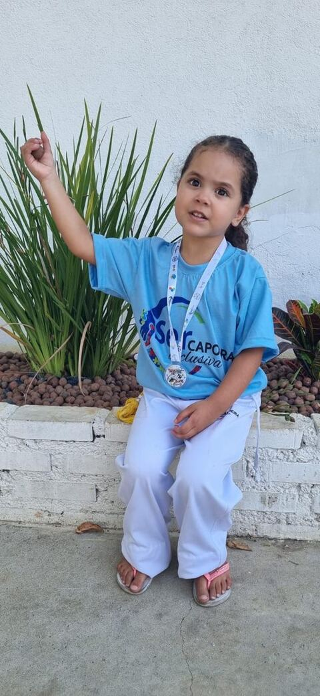
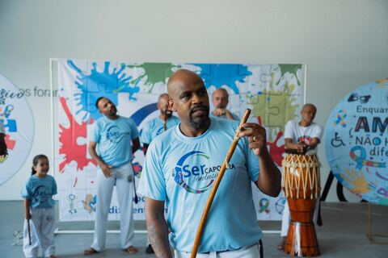
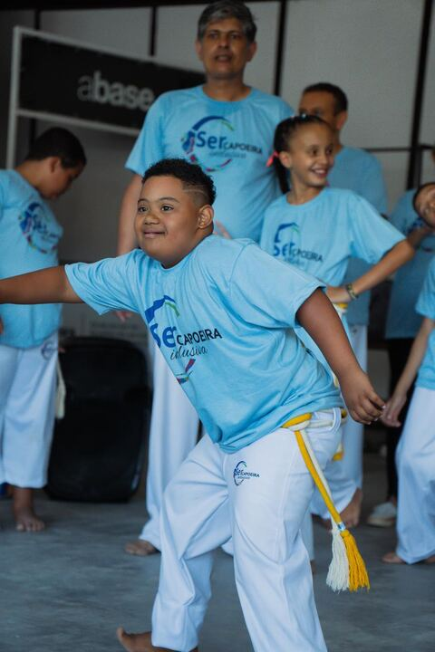
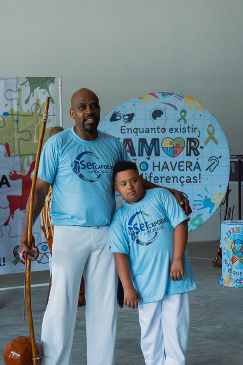
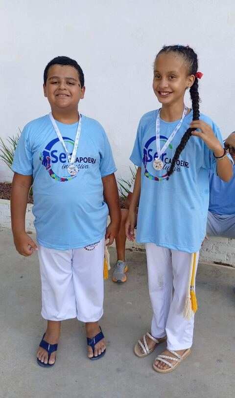
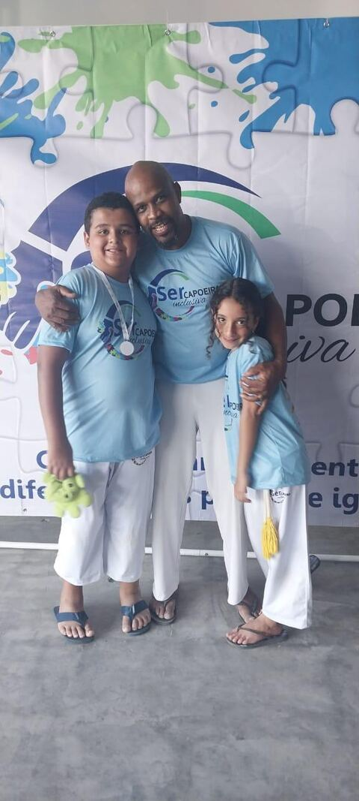
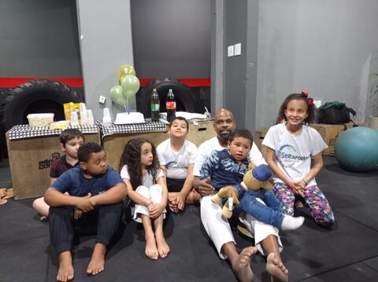
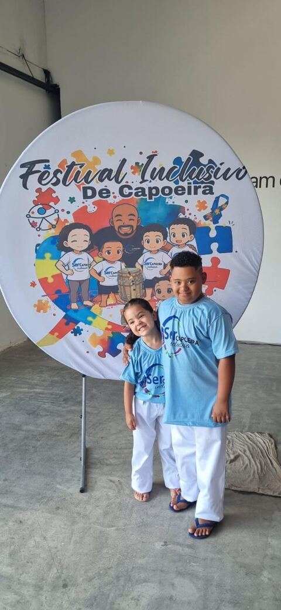
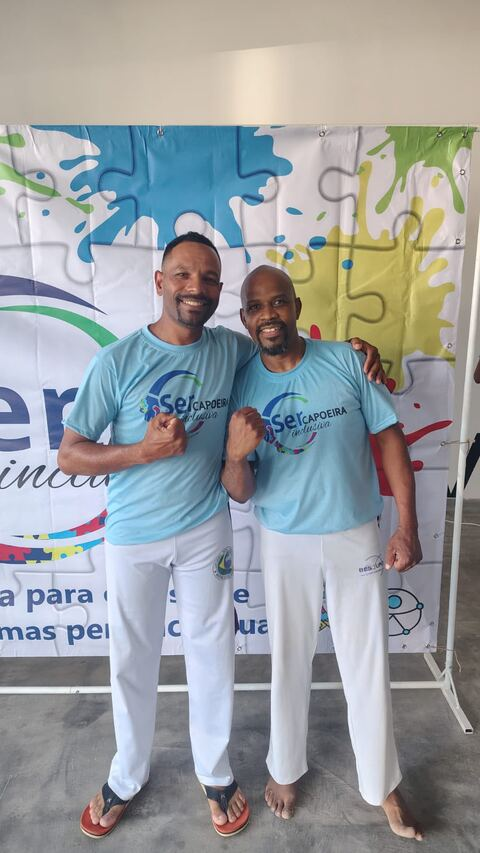
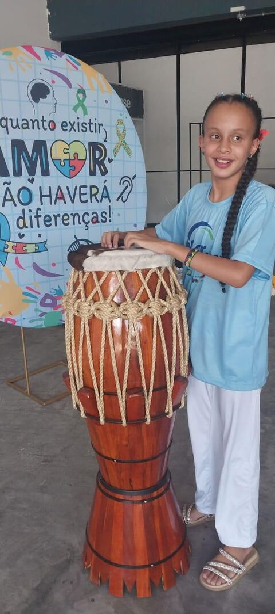
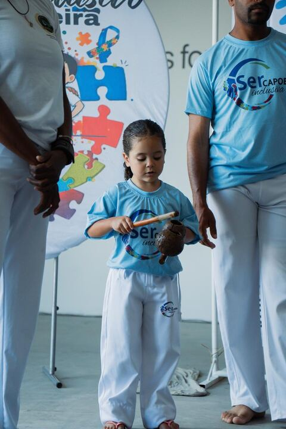
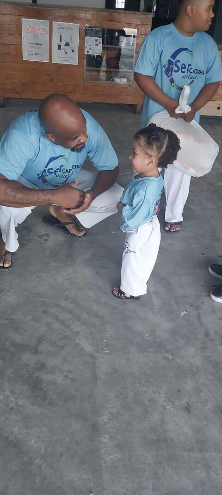
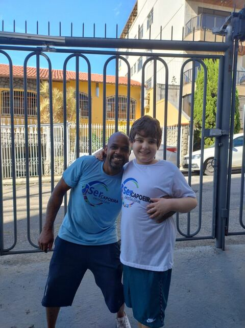


(03) Atividades
Outras atividades
Datas, locais e detalhes serão publicados aqui quando forem confirmados.
Aulas inclusivas
Aulas de capoeira adaptadas às possibilidades de cada participante.
Datas e detalhes em breveRodas de capoeira
Rodas de capoeira acessíveis a todos os participantes.
Datas e detalhes em breveEncontros comunitários
Datas e detalhes em breveApresentações
Datas e detalhes em breveAtividades com famílias
Datas e detalhes em breveFormação de instrutores
Formação de novos instrutores de capoeira inclusiva.
Datas e detalhes em breve
(04) Parceiros
Parceiros e apoiadores
As empresas e instituições que apoiam o Ser Capoeira serão listadas aqui.
Saiba como apoiarAinda não há parcerias confirmadas.
Faça parte
Quer participar ou apoiar um evento?
Converse com o Professor Dinho para saber das próximas atividades.